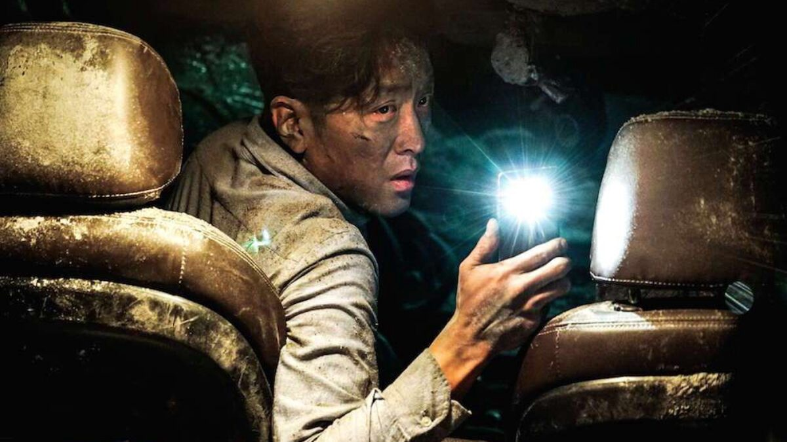

Série O Túnel
“Tunnel”, o novo thriller policial do canal a cabo OCN,
teve um bom começo, desafiando a opinião pública de que
pudesse se tratar de mais história mal contada de viagem
no tempo, uma vez que fala de um homicídio, investigado
pelo detetive Park Kwang-Ho nos anos 80 (interpretado por
Choi Jin-Hyuk), que viaja até o presente durante a perseguição
à um assassino em série.
Os telespectadores expressaram suas preocupações sobre as
semelhanças com o seriado policial de 2015 “Signal”, que
contava a história de uma dupla de detetives, do passado e
do presente, que se conectavam através de walkie-talkies
para resolver os casos.
